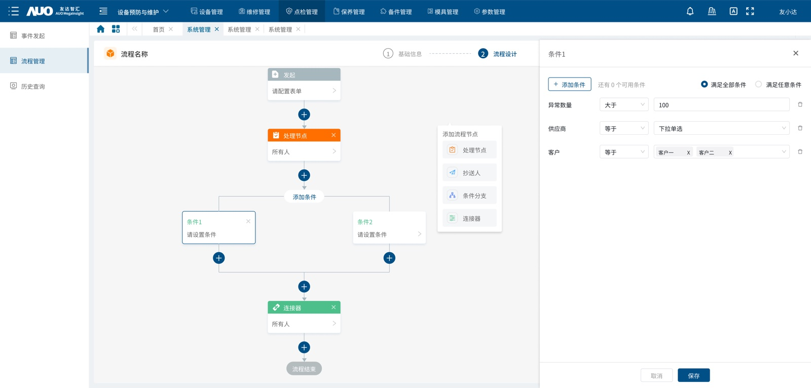

03 / 工业软件 / 2023.02—2023.12
制造业设备资产
全生命周期管理平台
参与资产采购、治工具管理、流程审批与设备状态监控等部分产品设计，推动设备资产从分散记录向全生命周期数字化管理转变。
设备健康诊断监控看板
⌾设备信息
- 设备名称
- 0822001
- 设备编码
- 0822001
- 设备状态
- 空闲
- 设备位置
- 生产 01 车间
⌁健康诊断
● X 2.5 设备十分健康
● Y 2.5 建议持续观察
● Z 2.5 建议停机检查
震动原始分析
X-Y
1000005101520
X-Z
1000005101520
Y-Z
1000005101520
震动特征分析
X ⌄mean ⌄设备可能出现异常
需观察一段时间，建议持续观察设备电机
需观察一段时间，建议持续观察设备电机
诊断模型
| 序号 | 轴向 | 不平衡 | 轴弯曲 | 不对中 | 松动 | 油膜旋涡 | 油膜晃动 | 内环损伤 | 外环损伤 | 滚珠损失 | 气息不均 |
|---|---|---|---|---|---|---|---|---|---|---|---|
| 1 | X | 287.1 | 287.2 | 287.3 | 287.4 | 287.5 | 287.6 | 287.7 | 287.8 | 287.9 | 288.0 |
| 2 | Y | 288.9 | 289.0 | 289.1 | 289.2 | 289.3 | 289.4 | 289.5 | 289.6 | 289.7 | 289.8 |
| 3 | Z | 290.7 | 290.8 | 290.9 | 291.0 | 291.1 | 291.2 | 291.3 | 291.4 | 291.5 | 291.6 |
业务背景
制造企业中的设备、治工具及特种设备涉及请购、采购、到货、验收、领用、退用和报废等多个业务环节，数据分散在采购、仓库、设备管理和使用部门，资产状态及业务进度难以统一追踪。
问题与目标
梳理设备资产生命周期中的核心业务链路，建立统一的资产信息和流程管理方式，支持不同资产类型的审批配置、到货验收、责任人追踪及设备状态监控。
我的职责
参与部分业务模块的需求梳理、信息架构、原型及交互设计，主要覆盖资产采购评估、治工具管理、流程配置、审批规则和设备状态监控等场景，并配合完成设计评审与研发交付。
关键方案
- 建立请购、到货、验收、台账、领退用和报废之间的业务关系。
- 设计可视化流程引擎，支持处理人、条件分支、会签或签、驳回及超时预警配置。
- 通过多维度评分、设备排名、雷达图及 ROI 预测辅助设备采购选型。
- 通过设备状态看板与明细下钻，支持设备状态识别和异常原因追溯。
本案例主要展示我参与设计的资产、流程和监控相关模块，不代表独立负责完整的设备管理、维修管理及整个平台建设。
DESIGN HIGHLIGHTS
核心产品设计展示
围绕资产生命周期、复杂审批配置和现场状态监控，展示本次项目中具有代表性的设计方案。

02 / 流程引擎
通过可视化流程引擎适配多类资产审批
将请购、领用、退用和报废等业务中的审批差异，抽象为流程节点、条件分支、处理人规则、多人审批、驳回方式和超时预警等通用配置能力，降低不同业务重复开发流程的成本。
- 可视化节点编排
- 动态处理人配置
- 条件分支与超时预警
成果
参与完成资产采购评估、流程配置、治工具管理和设备状态监控等模块设计，建立请购、到货、验收、领退用和报废之间的业务关系，并通过配置化流程与状态下钻提升系统的扩展性和资产信息可追溯性。
项目进一步加深了我对工业 B 端产品的理解：设备管理不仅是页面和表单的设计，更需要处理资产、人员、组织、流程、状态和业务规则之间的复杂关系。